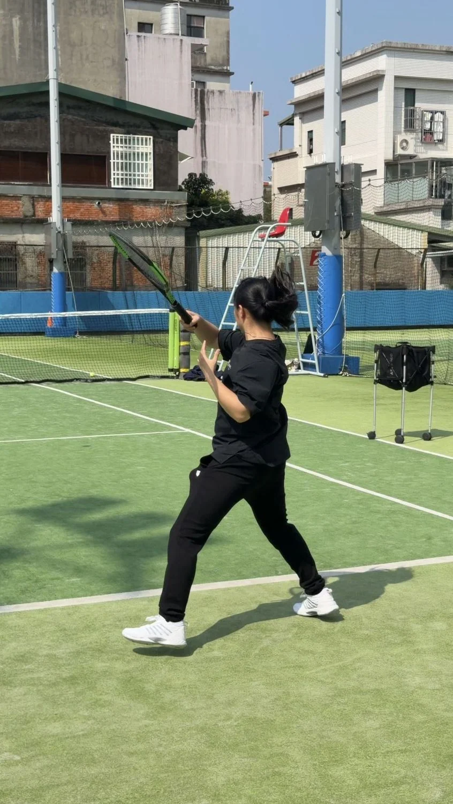
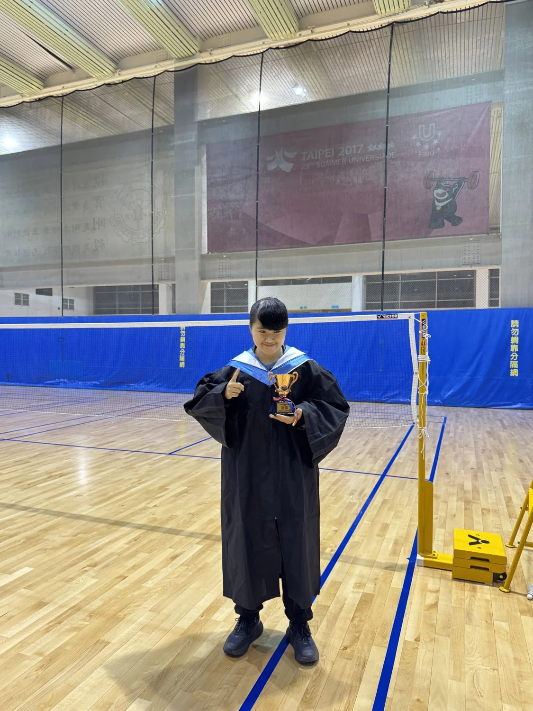
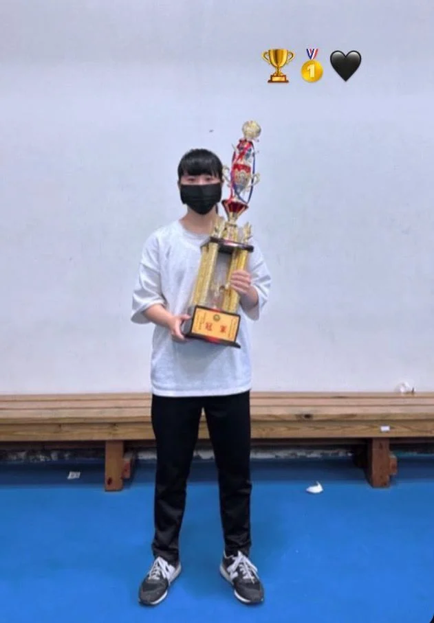
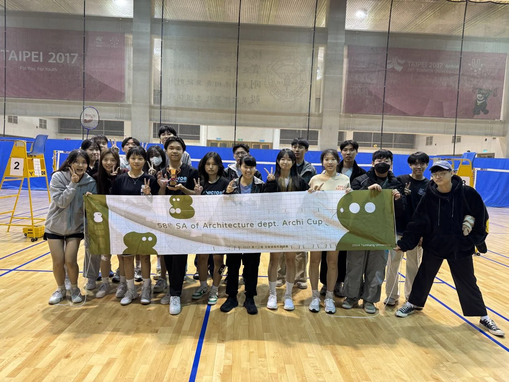

Varsity Tennis & Athletic Record
Varsity experience and individual and team results in tennis and badminton
Tennis | Competition Results
National High School Games — Tennis Singles, 6th place
National High School Games — Tennis Team Event, 7th place
Badminton | Competition Results
Chaoyang University of Technology Freshman Cup (Year 110) — Badminton Singles Champion
Chaoyang University of Technology Interdepartmental Badminton Cup — Academic Year 110: 3rd; 111: Champion; 112: Champion; 113: Champion
National Architecture Cup Badminton Team Tournament — 2021: Runner-up; 2023: Runner-up; 2024: Champion
In team events, primarily competed in singles, occasionally also playing women’s doubles or mixed doubles depending on the lineup.



